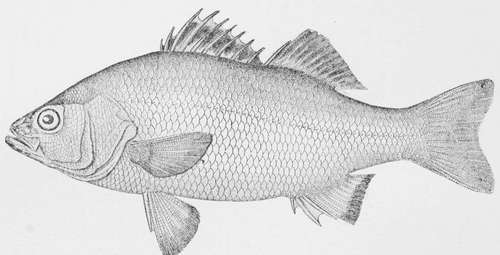

The White Perch
Description
This section is from the book "American Game Fishes", by W. A. Perry. Also available from Amazon: American Game Fishes: Their Habits, Habitat, and Peculiarities; How, When, and Where to Angle for Them.
The White Perch
TO-Night my banjo is attuned in a minor key to sing of a minor fish, which, in some lands, would take higher rank - than it does on our Atlantic coast where it is native. All fishes which take the fly deserve to be classed above those that can be lured only with bait.
A man in the audience here suggests that the banjo is not properly strung, and intimates that-the White Perch, which he calls Roccus Atnericanus, would, under this ruling, be classed as superior game to its big brother, the Striped Bass, or Rockfish, which it pleaseth him to speak of as Roccus lincatus. This interruption cannot be noticed now, for one cannot improvise without having some hours wherein to do it, and, had he been a friend, he would have warned me some days in advance that he had a plan to bring down the house with my answering verse. As it is, the head usher gets the sign that I do not know the person, and he is ejected for disorderly conduct. The dignity of the profession must be maintained at all hazards, and my course is based on what Iago says of Roderigo:
"For I mine own gained knowledge should profane, If I would time expend with such a snipe."
This is a favorite gag that I always get off on a snipe-shooting companion when I miss a bird, but have not sprung it on the fishermen before. I learned it from Edwin Booth; he has made it a chestnut to his audiences, but I might work it in as original in the dime museums until the fat man takes to applying it to the 1 iving skeleton; that would paralyze it for future use.
Once in a while I get a sore-headed fit but it passes like a thunder storm, leaving a better atmosphere behind it. Such a fit comes on when I hear, or read of, a good fish being denounced as a "vulgarian" because it is not "first-class." In Europe it is said that only princes and Americans ride first class, and I have seen the time that a cattle-car would have been welcomed as a means of abolishing space, while "counting railroad ties" was the only alternative between walking when "the ghost did not walk" and paying railroad fares. Therefore I do not rage with the heathen, but accept the best that is to be had. Years ago, when living in New York City, I have gone to Italian opera, on off-nights when there was no sparring at Harry Hill's or dog fight at Harry Jenning's, and really enjoyed it as a change, on the same principle as the old European Professor who rode in the third-class coach because there was no fourth.
After reading the above there appears to be a digression, but foot-paths are always more attractive than highways; and if I can't digress, then, to use the simile of the beginning, I had best let down the banjo bridge and "uncork." The point that was intended to be made is this: It is the fashion in this country to decry certain fishes, that are so far above many of those that both ancient and modern British anglers fish for that it has become necessary to defend some of the New World forms which have made the heart of Izaak Walton rejoice. First in this class is the Big-mouthed Black Bass, which a few still persist in calling "Oswego" Bass (how I hate that name!) It is a grand game fish, and is more certain to rise to the fly than the Small-mouth, to which its detractors always compare it. Where is the other duffer in the audience now who insists that the banjo never was in tune? If he interrupts I will refer him to Dr. Henshall, and if he can find anything that the apostle of the Black Bass has said that will sustain his position, or controvert mine, then we confess judgment and invoke mercy from the court.
White Perch -Roccus Ame rie anus.
There was no digression in the last paragraph, although one was attempted. The fact is that some American fishes have not received their proper rank as game, and the Big-mouthed Black Bass was instanced as a most glaring case in which a noble fish has been actually abused and reviled. In the subject of my song, the White Perch, no such claim is made; it has simply been neglected. I get some fair sport out of it when the Trout streams are far off, railroad fares high, and time, which was not made only for slaves and setting-hens, is limited. The White Perch was one of the things that I pursued in childhood, and in advancing years it still finds favor. Like a poor man it fails to receive justice.
"Here's a fish hangs in the net like a poor man's right in the law; 'twill hardly come out."-Pericles, Act ii., Sc. i.
"The imperious seas breed monsters; for the dish, poor tributary rivers as sweet fish."-Cymbclinc, Act iv., Sc. 2.
Often while playing my favorite part of a truant schoolboy-a role which pleased a few chums but never met favor from parental authority-has a small White Perch shown its silvery sides and bristling spines between the surface of the water and the deck of some craft at dock on the upper Hudson. We boys fished on general principles, in those days. There were no rods, lines or hooks for special fishes; we went to the village grocery and bought a few knots of the cheapest line, half a dozen hooks-two for a cent, pounded out a piece of lead for a sinker, and there we were, equipped for several days fishing for ten cents!
Floats and poles we despised, because as our oracle, John Atwood, said: "They aint no use, 'cause when you got a pole you just yank 'em out so quick you don't have any fun; but when you haul 'em in lively on a hand-line you've got time to feel 'em wiggle, and to wonder what you've got."
This, then, became our fishing law, for John had laid it down, and we wanted to "feel 'em wiggle," whether Chub, Sun-fish, White Perch, Spawn-eater, Bull-head or Eel; for, as before said, we fished on general principles for anything that had an appetite for worms. How our blood stirred when a half-pound Eel made us think we had a monster Perch or perhaps a Bass! Ah me! what fun we all had when boys. "Fun" was the word then; as we get older it becomes "sport."
Continue to: